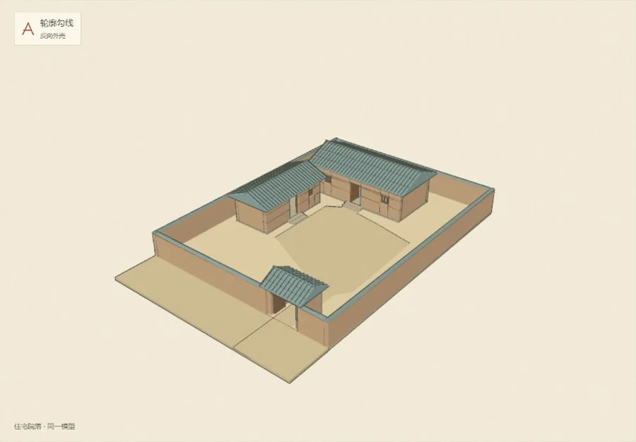
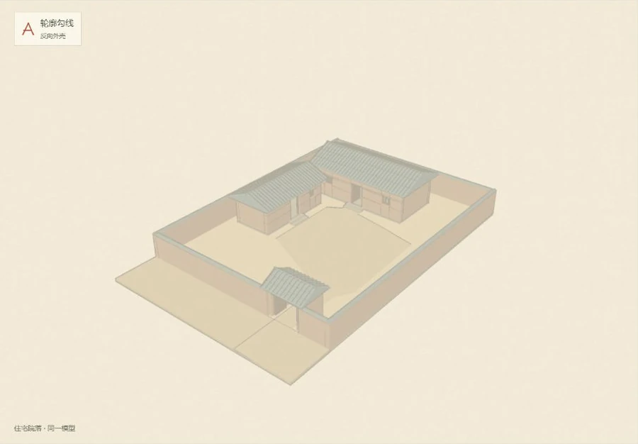

LUOYANG / A STUDY IN LINE & PAPER
一座城，
先从一笔开始。
把同一座院落放在纸上，
比较勾边、设色与纸面的质感。
转动一下，再看屋檐和转角。
样本取自现有住宅院落 A 方案，属于研究推测模型。这里切换的是画法样张，史料分级随内容资料绑定。
01 / THE DRAWING DESK
在同一个视角里，比一比。

A先读轮廓沿形体外侧添一层墨线，观察屋檐、墙角和建筑相接处。
B再读折线从画面的深浅与朝向变化提取线条，观察屋面、门洞和内外转折。
02 / FOUR PAGES, ONE COURTYARD
四张样张，放在一起看。
同一模型与机位，
把区别留给线条和颜色。
墨线实色
深色轮廓配上平涂，先看清房屋和庭院的形状。
墨线实色
让画面中的转折也留下墨迹，比较屋顶与门洞的清晰度。

铅笔淡彩
把线条和设色放轻，让院落像一页仍在推敲的手绘记录。
铅笔淡彩
用细而浅的线保留结构，让淡彩透出纸面质感。
展开模型资料与技术对照
ABOUT THIS STUDY
这张试验纸上有什么
模型来自住宅院落模块组的 A 方案。两种描边共用模型、相机和色板，墨线实色与铅笔淡彩都在这个样本上比较。
当前院落属于研究推测模型。画风选择完成后，再由内容资料为具体建筑绑定史料等级与推测依据。
查看院落模型与研究说明RENDERING NOTES
两种描边的做法
反向外壳把模型沿法线略微扩展，绘制背面的线色。线条跟随形体，轮廓粗细与形体接缝需要一起观察。
边缘检测读取画面中的深度与法线变化，在后处理阶段提取边缘。线条更容易包含内部转折，远近变化时要观察稳定性。
纸纹由网页程序生成，平涂与淡彩使用同一套屋面、墙体和地面色板。淡彩让颜料透出纸色，建筑之间的遮挡关系继续保留。
MEASURED IN THIS SESSION
当前原型的渲染记录
打开三维比较后显示本次测量。
记录范围为当前院落原型。完整洛阳城的电脑端预算为鸟瞰绘制调用不超过 300、三角形不超过 150 万、集成显卡达到每秒 30 帧，进入可交互前下载量不超过 8 MB。近景街区另计，每区不超过 10 MB。